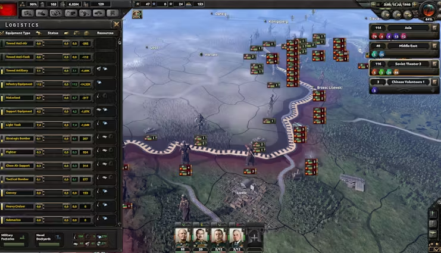

Hearts of Iron IV — это стратегическая игра, в которой вы берёте на себя управление любой страной во время Второй мировой войны.
Управляйте экономикой, армией, дипломатией и создавайте свою альтернативную историю.
Вы сможете управлять ресурсами, распределять промышленность, вести переговоры, заключать альянсы и даже создавать новые политические течения внутри вашей страны.
Вы сможете полностью контролировать свою армию, флот и авиацию. Разрабатывайте новые технологии, организуйте дивизии и решайте, когда и где наносить удары по противнику.
